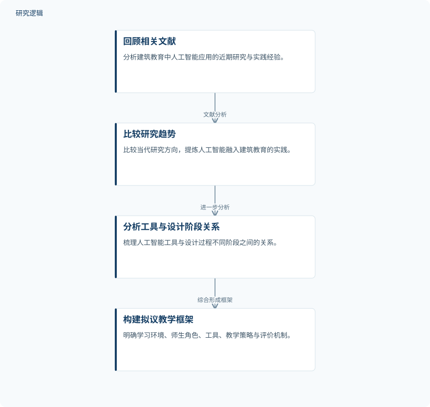

摘要解读
人工智能赋能建筑设计技能培养：面向建筑设计课程的教学框架
توظيف الذكاء الاصطناعي في تطوير مهارات التصميم المعماري: نحو إطار تعليمي مقترح لمقررات التصميم المعماري
解读更新 2026-10-31 09:26 · 依据公开摘要整理，未核验全文细节
生成式设计、大语言模型与图像生成工具进入建筑设计课堂后，教学需要回答的不只是“怎样使用工具”，还有“怎样培养设计能力”。这项研究通过文献分析提出教学框架，讨论如何兼顾人工智能的辅助能力、学生的设计思维与人的创造力。
文章目录
建筑设计课堂面临的不只是工具更新
摘要将研究背景放在人工智能推动的建筑教育转型之中：相关工具正在参与设计过程、方案分析、性能评价与创意方案生成。生成式设计、大语言模型和图像生成技术的发展，也促使建筑院校重新审视课程设置与教学方式。
本文关注的是建筑设计课程中的能力培养，而非某一种工具的操作教学。其核心问题是：如何把人工智能纳入有组织的教学过程，使工具使用与学生设计技能的发展建立联系。
从文献分析走向教学框架构建
研究采用描述性分析方法，回顾并分析2021–2026年发表的相关文献，比较当代研究趋势，并梳理人工智能工具与设计过程不同阶段之间的关系，以提炼建筑教育中整合人工智能的实践经验。
在此基础上，作者构建拟议教学框架，明确学习环境的组成、教师与学生的角色、人工智能工具、教学策略及评价机制。摘要所述方法重点是文献综合与框架构建，不能据此将其理解为已完成课堂干预验证的研究。
依据摘要整理的教学框架构建过程


仅概括摘要明确陈述的文献分析与框架构建关系，不代表论文原图，也不表示已完成教学效果验证。
下载 SVG图示关系说明
实线表示相邻阶段的信息流，虚线表示跨阶段联系或反馈。
回顾相关文献 → 比较研究趋势：文献分析；比较研究趋势 → 分析工具与设计阶段关系：进一步分析；分析工具与设计阶段关系 → 构建拟议教学框架：综合形成框架
框架主张：分阶段融入，兼顾创造力与责任
摘要报告的主要结论是：人工智能融入建筑教育，不应停留在数字工具的技术性使用，而应置于有组织的教育框架内。框架强调，在利用人工智能分析能力和生成能力的同时，保持对设计思维与人类创造力的培养。
拟议框架还强调，人工智能应逐步融入不同设计阶段，并配合清晰的评价标准与负责任使用技术的伦理要求。作者将其定位为工程与建筑院校调整设计课程的参考，而非已经证明能够提升学习表现的教学方案。
框架的适用范围与教学成效仍需辨明
仅凭摘要，无法判断纳入文献的数量、检索与筛选规则，以及各类实践经验的证据强度；也无法判断是否涉及学生样本、课程对照、学习成果测量或跨院校验证。这些信息未在摘要中报告，并不等于论文没有开展相关工作。
摘要也未展开工具与设计阶段的具体对应方式、评价指标及伦理要求的实施细节。因此，当前资料支持理解框架的构建思路与教育主张，但不足以判断其教学效果、适用条件或相较既有教学方式的优势。
阅读启发：关注工具如何进入设计学习过程
阅读启发：对关注生成式设计的读者，值得进一步阅读的是，框架如何区分工具生成方案与学生形成设计判断的过程，以及评价标准如何体现人的创造性贡献。本文提供了教育组织层面的讨论入口，不宜据此推断结构优化、可靠性或工程性能已经获得改善。
以上为本站阅读启发与建议，不是论文已验证的结论。